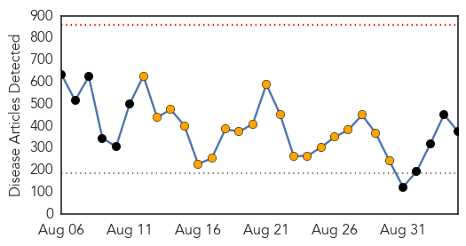
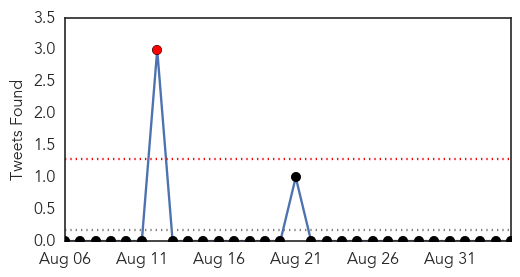

Ebola
30-Day Web Trend
0 alerts, 19 warnings

30-Day Twitter Trend
1 alerts, 4 warnings

Article Locations

Article Confidences

Top Articles:
- 1.000
- Ebola virus has killed more than 1,900, health officials say
- 1.000
- U.N. says $600 mln needed to tackle Ebola as toll tops 1,900
- 1.000
- WMBFNews.com, Myrtle Beach/Florence SC, Weather
- 1.000
- Seven reasons why this Ebola epidemic spun out of control
- 1.000
- How escapee Port Harcourt index case was traced
- 1.000
- On Ebola ward, Liberian nurses must improvise gear
- 1.000
- WHO calls for coordinated response to fight Ebola
- 1.000
- Ebola Experts Discuss Possible Cures, Vaccines
- 1.000
- Ebola deaths top 1,900
- 1.000
- U.N. says $600 million needed to tackle Ebola as deaths top 1,900 - World
- 1.000
- Another American Doctor Has Ebola; CDC Downplays Danger to U.S.
- 1.000
- Ebola death toll at more than 1,900
- 1.000
- U.N. says $600 million needed to tackle Ebola as deaths top 1,900
- 1.000
- The Portland Press Herald / Maine Sunday Telegram
- 1.000
- J&J fast-tracks Ebola vaccine
- 1.000
- A Few Ebola Cases Likely In U.S., Air Traffic Analysis Predicts
- 1.000
- Ebola Crisis in West Africa: Ebola Getting Worse as Death Toll Passes 1,900 in West Africa
- 1.000
- More Global Help Needed to Fight Ebola Outbreak
- 1.000
- Why the Worst Ebola Outbreak May Be Worse Than We Thought
- 1.000
- UN needs $600M to stem Ebola as deaths top 1,900
- 1.000
- Ebola death toll surpasses 1,900
- 1.000
- Director Tom Freiden Of The CDC Confirms Dire Situation In Areas Affected; Comments ‘Ebola Outbreak Out Of Control’ And ‘Window Of Opportunity Closing’
- 1.000
- New drugs not the only answer to Ebola epidemic
- 1.000
- Fourth American Infected With Ebola Identified As Rick Sacra, A Doctor From Boston
- 1.000
- $600m needed to tackle Ebola: UN
- 1.000
- Ebola outbreak racing out of control, says US
- 1.000
- Timeline: World's worst Ebola outbreak tests global response
- 1.000
- UN says $600 million needed to tackle Ebola as toll tops 1,900
- 1.000
- U.N. says $600 million needed to tackle Ebola as deaths top 1,900
- 1.000
- If You Live in Illinois, Do Not Panic About Ebola
- 1.000
- Third American Ebola patient returning to the U.S. for treatment
- 1.000
- Is West Africa’s Ebola outbreak uncontainable?
- 1.000
- UN says $600 million needed to tackle Ebola as deaths top 1,900
- 1.000
- US to provide $75M to expand Ebola care centers
- 1.000
- Can Ebola be cured by using the BLOOD of survivors?
- 1.000
- Ebola virus is threat to all of humanity warns Gayle Smith
- 1.000
- Troisi: Flu, not Ebola, a pandemic threat to U.S.
- 1.000
- US Health Official Warns 'Window of Opportunity' to Combat Ebola Closing
- 1.000
- Ebola Experts Discuss Possible Cures, Vaccines
- 1.000
- WHO: New Ebola fears mount in Nigeria
- 1.000
- iafrica.com Airlines making Ebola worse?
- 1.000
- African Union to host emergency meeting over Ebola
- 1.000
- Ebola virus has killed more than 1,900, health officials say
- 1.000
- U.N. says $600 million needed to tackle Ebola as deaths top 1,900
- 1.000
- Ebola death toll exceeds 1,900 -- WHO
- 1.000
- SA ready to combat Ebola
- 1.000
- UN Senior Leaders Outline Needs for Global Ebola Response
- 1.000
- UN says $600 mln needed to tackle Ebola as deaths top 1,900
- 1.000
- Death toll nears 2,000 in West African Ebola outbreak
- 1.000
- UN says $600 million needed to tackle Ebola as deaths top 1,900
Showing top 50 articles...
Top Tweets:
- 0.975
- Or rather, in the current Ebola epidemic, public health "systems" EBOLACHAT
- 0.824
- RT: “The virus is moving faster than anyone anticipated": @DrFriedenCDC on Ebola outbreak: http://t.co/38Ir8jEe5a
- 0.730
- Ebola survivors beacons of hope during outbreak. They are immune to virus & cannot infect others http://t.co/UYNTkHfoWK
- 0.672
- RT: Ebola survivors beacons of hope during outbreak. They are immune to virus & cannot infect others http://t.co/UYNTkHfoWK …
- 0.627
- RT: Urgent response needed for Ebola, says following trip to West Africa: http://t.co/Mccp3j5qot PHNewswire
- 0.616
- RT: Nigeria, has reported 3 confirmed Ebola in PortHarcourt, additional suspected cases are being investigated http://t.co/OzAalAUB…
- 0.588
- RT: Ebola outbreak has been one of terrible human suffering, but there are reasons to be hopeful: http://t.co/UYNTkHfoWK…
- 0.588
- RT: Ebola outbreak has been one of terrible human suffering, but there are reasons to be hopeful: http://t.co/UYNTkHfoWK…
- 0.523
- ECDC risk assessment:Low risk of Ebola infection for visitors to affected countries if recommended precautions taken http://t.co/DePwFIvqJd
Swine Flu
30-Day Web Trend
0 alerts, 0 warnings

30-Day Twitter Trend
1 alerts, 0 warnings

Article Locations

Article Confidences

Top Articles:
Top Tweets:
-
No tweets found for Sep 04, 2014